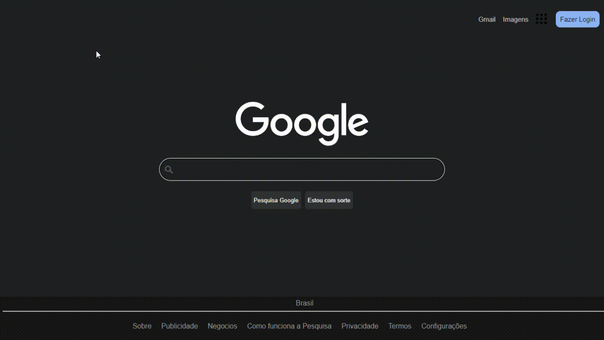
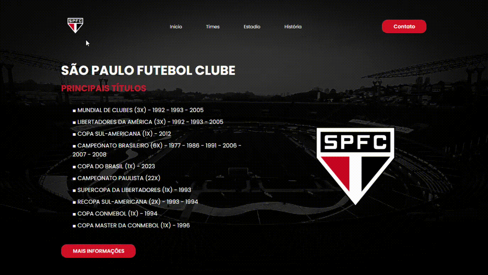

Google Clone | Desktop
------------------------------
Teste básico desenvolvido para desktop com o objetivo de estudar o posicionamento de itens na tela buscando reproduzir o layout padrão do Google, além de estudo de hover e JS para realizar a pesquisa de conteúdo.
OBS: Nem todos os itens estão com as suas funcionalidades ativas.
São Paulo FC - Títulos | Desktop
-----------------------------------------
Teste desenvolvido para desktop com o objetivo de entender o funcionamento do hover, animações com Keyframe e uso de JS para reproduzir música. Site representando os títulos do São Paulo Futebol Clube.
OBS: O hino do clube será reproduzido ao clicar no escudo.